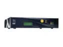

EyeBO
Status: Abandoned (since 2007)
Introduction
Some time ago I recovered a rather funny machine, an Eyebox One, from the company RightVision.
Although not very powerful (but nothing prevents you from changing the
motherboard), its appeal is that it is rackable (2U format), silent, and
has a ridiculously low power consumption. 
{kind=link}
Well, in addition to these qualities, this box has a 20×4 LCD screen with a keypad, 2 bargraphs, and 3 leds, each with 3 possible colours.
The problem is that this LCD is not supported by any of the existing free projects, and is driven by a proprietary binary whose source is not available.
EyeBO
EyeBO is therefore a free driver for the LCDproc project which should eventually make it possible to fully control the LCD, as well as the various little gadgets that come with it.
Project progress
10/14/06
The driver is now available in the stable version of LCDproc.
09/09/06
Holidays oblige, it is with a few days’ delay that I announce that
EyeBO has been integrated into the LCDproc
project.
It can be compiled directly from the CVS version available on
sourceforge.net. The
documentation
is online as well.
08/19/06
A new version is available, with quite a few good things, including
documentation for the driver.
Everything can be downloaded right here.
08/06/06
I have put online a first version of the driver, to download right here.
07/26/06
Thanks to a small patch for the LCDproc client, it now displays the
total CPU load, as well as the used RAM, on the 2 BarGraphs.
This patch is still far from perfect (there is still an update interval problem for some LCDproc modes), but it has the merit of integrating easily (and cleanly) into the existing project.
Overview of the LCD module
07/24/06
I have already accomplished quite a bit of work. There is now a BETA
(but stable) version of EyeBO which makes it possible to use the LCD
screen as well as the Keypad with LCDproc.
Two videos are available, (badly) filmed by me, with a simple digital camera:
Demonstration of the LCD
Displaying the CPU load on a Bargraph